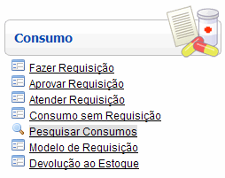

Pesquisar Consumos [ Voltar ]Utilize este formulário localizar e abrir registros de consumos já realizados. O formulário "Pesquisar Consumos" encontra-se dentro do menu "Consumo". 
Ao clicar no nome do formulário, o sistema exibirá a seguinte tela:  Siga os passos abaixo para realizar um consumo sem requisição: 1º Passo: utilize os filtros de pesquisa para localizar o registro de consumo que deseja consultar. Para facilitar a localização do registro desejado, esta pesquisa possui filtros associados ao consumo que servem para restringir a busca. Para mais informações sobre outros recursos e funcionalidades da pesquisa, favor ver o manual Introdução ao Sistema.Assim que localizar o registro, selecione-o com um clique. Ele será aberto e serão exibidas suas informações atuais. |